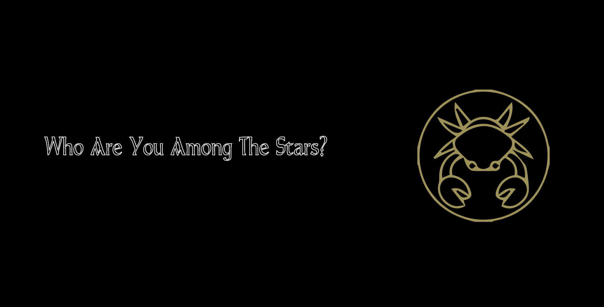
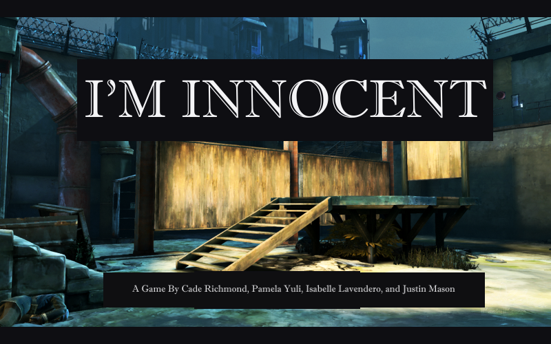

Past Projects
In the Stars
MAY 2019
Project Duration: 2 Weeks
Keywords: Poetry, Astrology, Art

Live Preview
Source
This app was developed with my interest in astrology, and the ways in which the stars connect to each horoscope sign. All SVG's were created my me, individually using Adobe Illustrator.
Technologies Used:
- JavaScript
- HTML5
- CSS3
- PhotoShop
- Illustrator
My Role
In this project I oversaw all aspects of development. My goal was to create an art piece that was simple yet emotional. I developed each SVG as well as the poem that went with each horoscope.
Project Difficulties
Creating each SVG was by far the most difficult aspect of this project. After developing each image, I had to animate each using Illustrator, only to then connect each piece through code using JavaScript.
My Solution
Working in parts, while simple, served as the most effienct way to get each drawing done on time. First starting with the line work, and then focusing on each glowing orb allowed me to work quickly and efficiently.
Notable Features
For this piece I wanted to make sure that the viewer took their time to look through each page. There are no instructions, as the goal is for the viewer to explore at their own pace.
I'm Innocent
DECEMBER 2019
Project Duration: 1 Month
Keywords: Mini-Games, Prison, Non-Fiction

Live Preview
Source
This app was created as a group project with the theme of the U.S. prison system. My collegues and I created 4 different mini-games with the main gola of creating an experience in which the player would be required to pass each mini-game in order to escape a prison.
Technologies Used:
- JavaScript
- HTML5
- CSS3
- PhotoShop
- Audacity
- MAMP
- P5
My Role
In this project I oversaw the developemtn of the mini-game "Search and Escape"
Project Difficulties
After coming up with the idea of creating a search and escape game, I struggled with figuring out with how to create enemeies that would cause damage, and also move around the map without leaving the map and causing the game to crash.
My Solution
Through Perlin Noise and in depth testing, I was able to create a map with values that would limit the enemies to a specific space of the map. The do not crash into each other, but can cause damage to the player if they bump into each other.
Notable Features
The map was created using an array in which number represent certain tiles that I designed. There are tiles such as: door tiles, floor tiles, wall tiles, etc.
Circus of Values
NOVEMBER 2018
Project Duration: 1 Week
Keywords: BioShock, Wack-a-Mole, Clownn

Live Preview
Source
This app was created as a group project with the theme of the U.S. prison system. My collegues and I created 4 different mini-games with the main gola of creating an experience in which the player would be required to pass each mini-game in order to escape a prison.
Technologies Used:
- JavaScript
- HTML5
- CSS3
- PhotoShop
- Audacity
- MAMP
- P5
My Role
In this project I oversaw the developemtn of the mini-game "Search and Escape"
Project Difficulties
After coming up with the idea of creating a search and escape game, I struggled with figuring out with how to create enemeies that would cause damage, and also move around the map without leaving the map and causing the game to crash.
My Solution
Through Perlin Noise and in depth testing, I was able to create a map with values that would limit the enemies to a specific space of the map. The do not crash into each other, but can cause damage to the player if they bump into each other.
Notable Features
The map was created using an array in which number represent certain tiles that I designed. There are tiles such as: door tiles, floor tiles, wall tiles, etc.